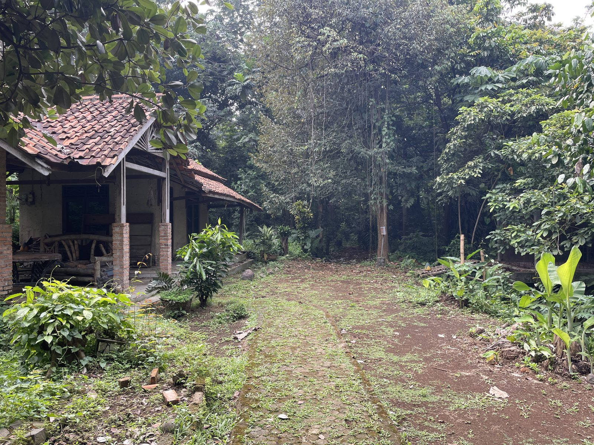
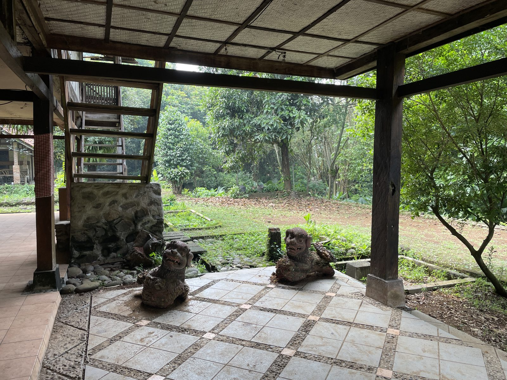
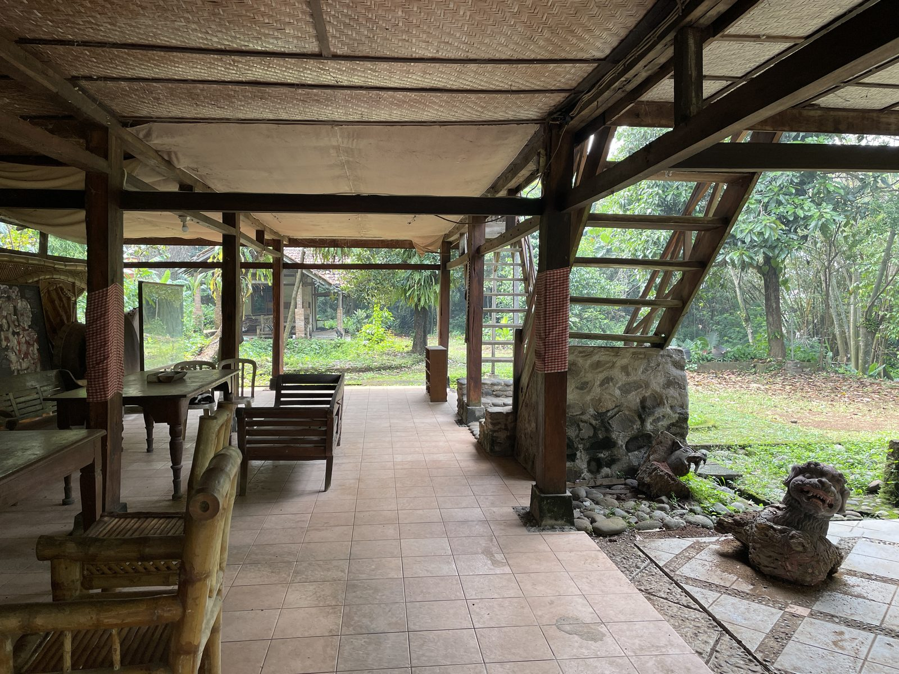
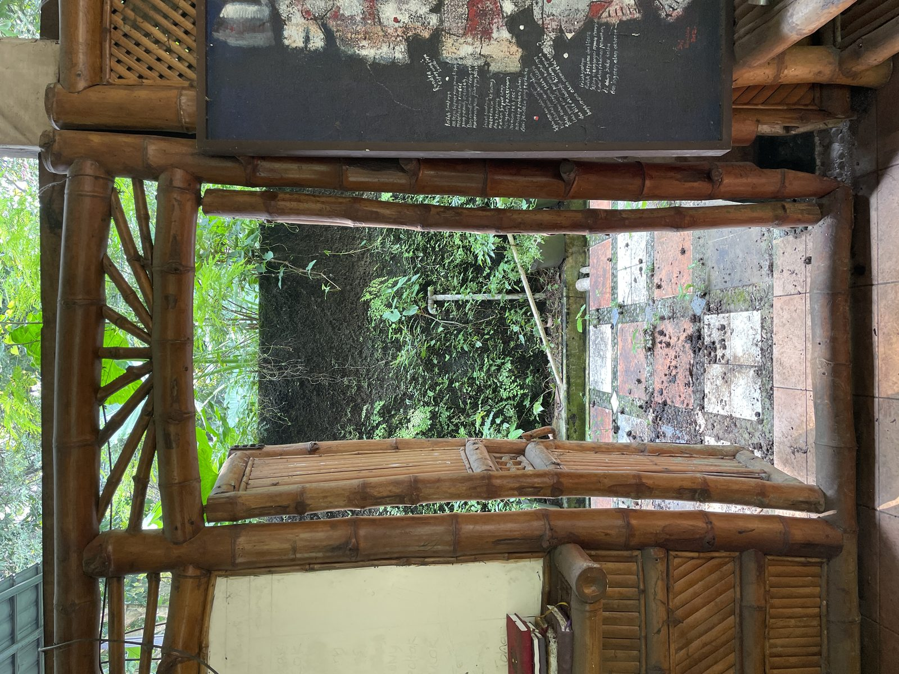
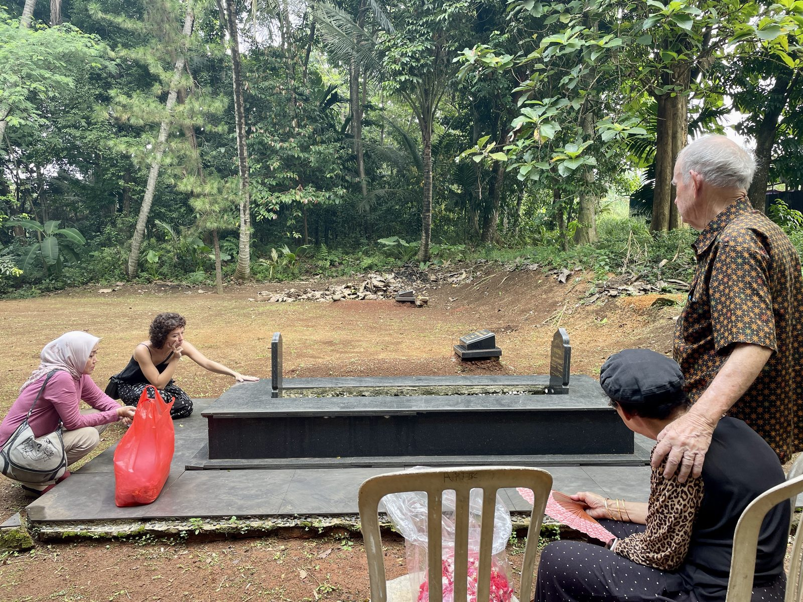
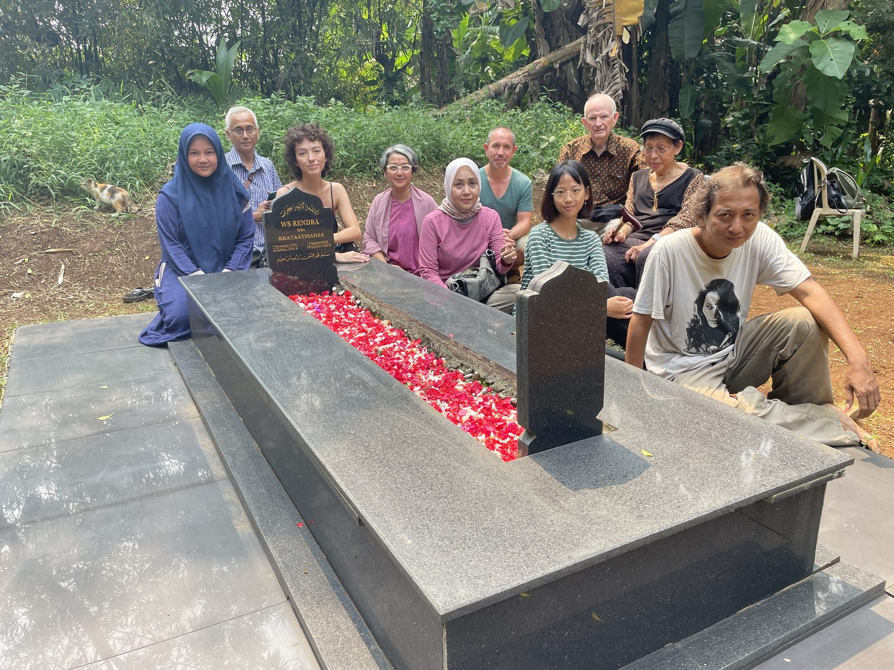

W.S. Rendra — poet, playwright, actor — was one of Indonesia's most important artists of the twentieth century, and also one of its most dangerous, in the eyes of the state. His company, Bengkel Teater, was banned twice under Suharto. In response, Rendra moved the company to a farm outside Jakarta at Cipayung: a subsistence community that could feed itself and keep making work, independent of any patron who might silence it. He died in 2009.
In 2004 I undertook a three-month residency with Rendra and the company on the farm in Cipayung.

Bengkel Teater Rendra compound, Cipayung, Java.
The Rain-unmakers
The ritual was almost banal, and over before it began. The two shamans casually picked up their bucket and grass and started talking amongst themselves. Members of the Bengkel Teater Workshop wandered over, chatting, helping in the clear up. It was all quite unremarkable, and had Rendra not told me what was going on, I'd have thought the shamans so-called were rather tradesmen or even vagrants.
The company continued with the final arrangements for the campaign event for the next 45 minutes or so, moving in and out of the driving rain. The wet season should have ended already, but the monsoonal conditions had persisted for days now. As the last row of plastic chairs were straightened out in front of the wayang-plastik puppet theatre, the first military vehicle was ushered under the entrance boom gate, and rolled into the farmlet complex. Local villagers were gathering. Journalists with camera bags and portable lights nonchalantly walked in, picking out vantage points, hoping to get the best view of the Health Minister.
And as the crush of people filled every last seat the light changed and a small gap in the clouds directly above appeared. A patch of blue glimmered, then stretched, and suddenly the event was in sunlight. Curtains of rain gushed down still off in each direction, but the theatre arena was now dry. Words came across the loudspeakers. A hush came over the crowd, and the shadow play began with crashing percussion and animated voices, hands clutching transparencies pressed against the backlit screen.


Bengkel Teater Rendra compound, Cipayung.
Lake Togo
Lake Togo. Mist. An ojek is a motorbike taxi. You jump on and grip the driver round the waist. Cheap and fast. We rushed past ricefields. Muddy roads along ramshackle sheds. Coconut trees yawning with young coconuts. Soil so fertile you could plant a stick anywhere and it would sprout. Rushing past more ricefields. More mist near, and veiling the line of mountains that protect and hide the enormous, mythic lake. Biggest in the country, perhaps the hemisphere. Funeral music of the Togo culture is fast rather than dirge-like. Rushing to the end. The ojek pulls to the side, splattering mud. Small change is exchanged. This is the place. I've not been here before, and immediately know I won't come again. The composer answers the door. Wide, guileless smile. Sitting, tea offered. Conversation begins. But the mountains hear something else. Something lost. Something silent and died. This is my only chance and I don't know what I'm going to hear.
Charisma
The spiders were spindly, lanky and tropical-huge. Harmless according to the locals, but hard to relax around. From the window of Rendra's study, I could make out at least five webs of concentric circles, beaded with raindrops, glistening against the verdant palm and banana tree backdrop. Rendra's resonant voice was gentle and familiar. I was family and therefore afforded an intimacy that felt unearned but greatly appreciated. He talked of Oedipus and politics and shamans, and then asked if I had a question.
'What is charisma?'
'See that leaf out there?' Waterdrops fell from its tip in a steady rhythm. 'Charisma is: I love you. You love me.'
I took this in.
See this bucket
'See this bucket here? We had a shaman live with us for several months. One day he suddenly said he had to leave, and I asked him how we could contact him if we needed to. He glanced around and saw the bucket and said, "Just call into this bucket and I'll know." And he left. A year later, we had an emergency and desperately needed some help. Not expecting much, I called into the bucket. An hour later, the shaman appeared.'

Bengkel Teater Rendra compound.
2024


Rendra's grave, Cipayung, 2024. With Widyas (Rendra's sister) and family.
The farm
Credits